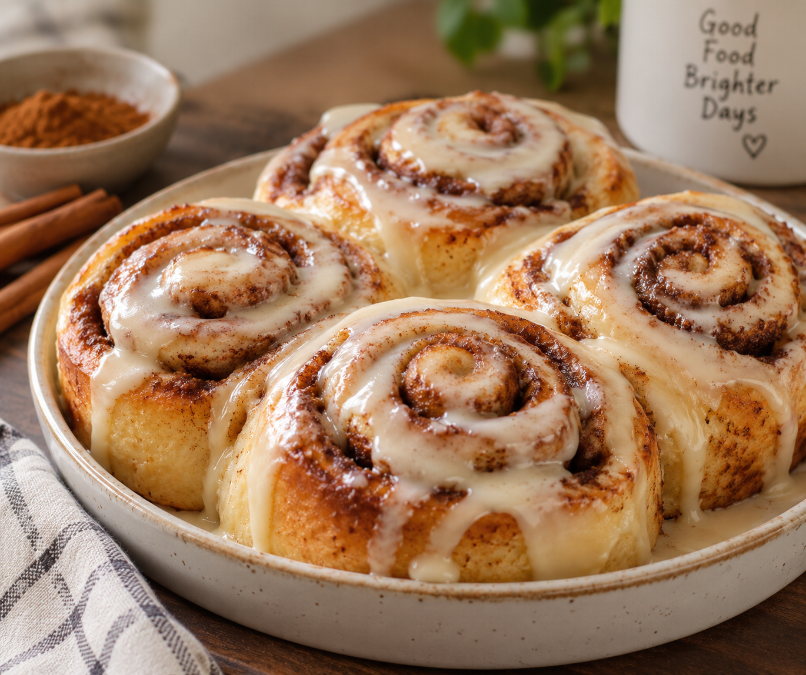

Back to Home
Cinnamon Roll

Description
Soft and fluffy rolls filled with sweet cinnamon and brown sugar,
then topped with a creamy vanilla icing. They are warm, sweet,
and perfect for breakfast or dessert.
Ingredients
For the Dough:
- 3 cups all-purpose flour
- 1 cup warm milk
- 2¼ teaspoons active dry yeast
- ¼ cup white sugar
- ¼ cup melted butter
- 1 large egg
- ½ teaspoon salt
For the Filling:
- ½ cup brown sugar
- 2 tablespoons ground cinnamon
- ¼ cup softened butter
For the Icing:
- 1 cup powdered sugar
- 2 tbsp milk
- ½tsp vanilla extract
Steps
- Mix the warm milk, yeast, and sugar. Let it sit for about 5–10 minutes until foamy.
- Add the melted butter and egg, then mix.
- Add the flour and salt. Mix until a dough forms.
- Knead the dough for about 8–10 minutes until smooth.
- Cover and let it rise for about 1 hour, or until doubled in size.
- Roll the dough into a large rectangle.
- Spread softened butter over the dough.
- Mix the brown sugar and cinnamon, then sprinkle it evenly over the butter.
- Roll the dough tightly into a log and cut it into 9-12 equal pieces.
- Place the rolls in a greased baking dish and let them rise for another 30 minutes.
- Bake at 350°F (175°C) for 20-25 minutes or until golden brown.
- Mix powdered sugar, milk, and vanilla. Drizzle the icing over the warm cinnamon rolls.